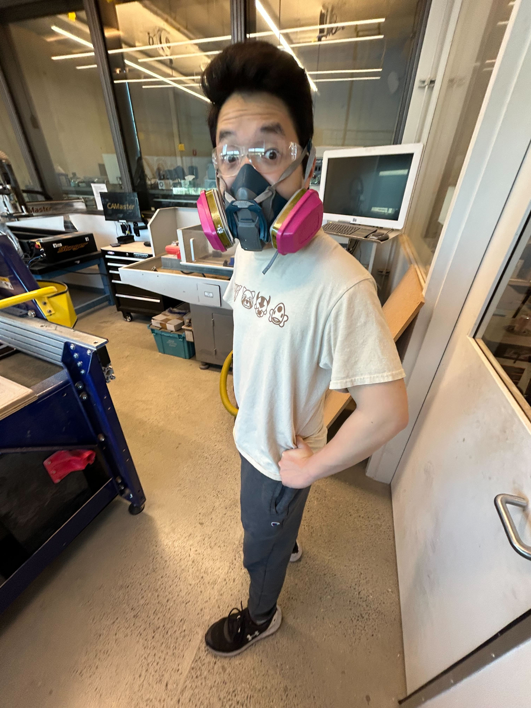
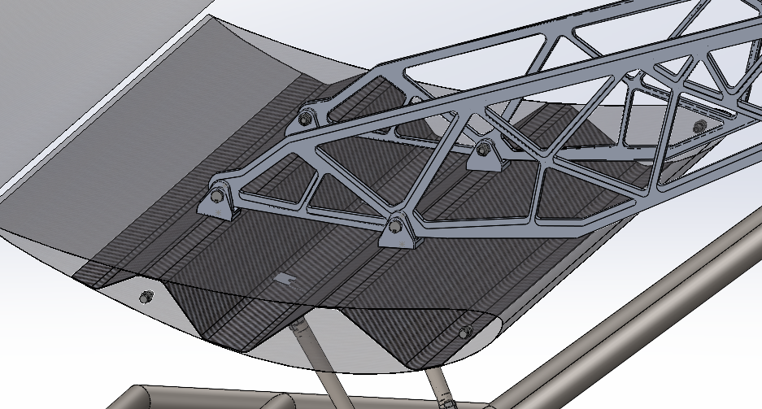
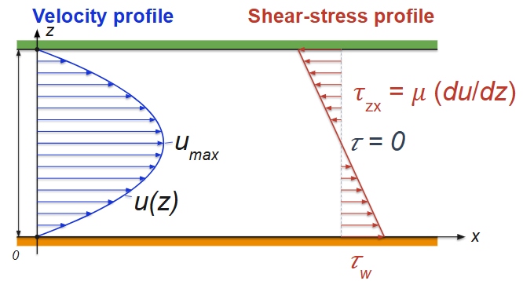
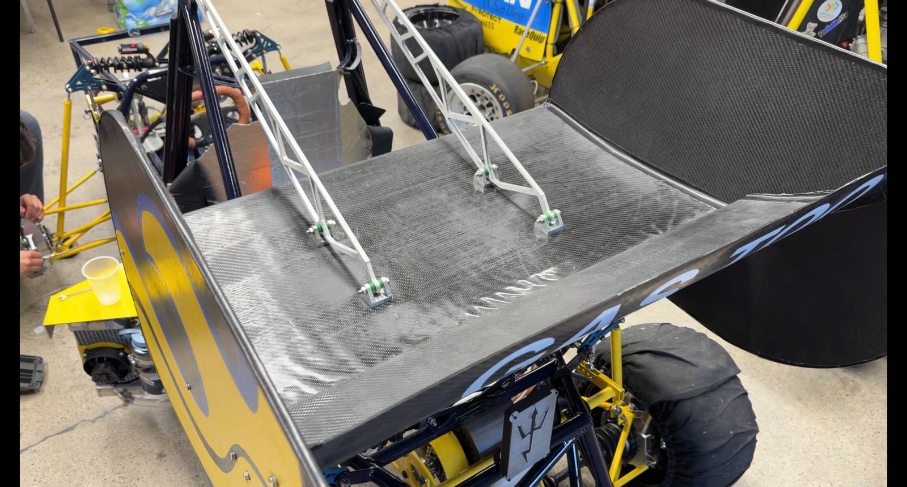
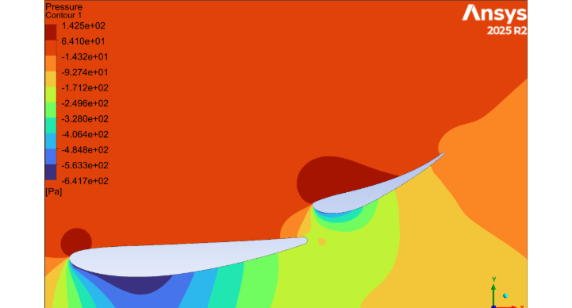
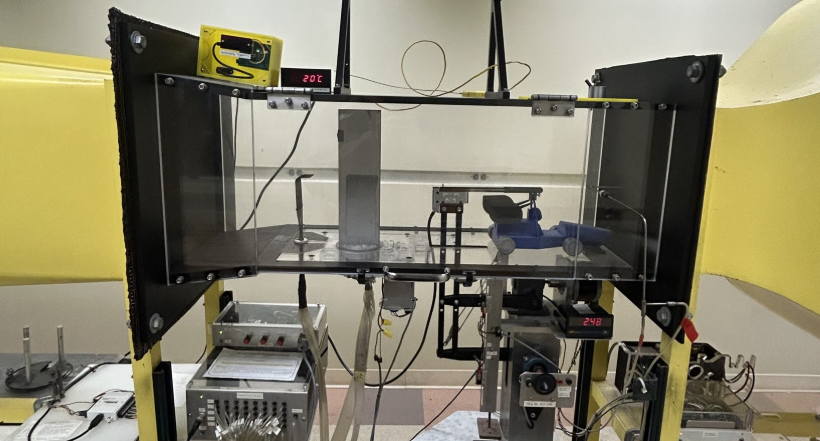
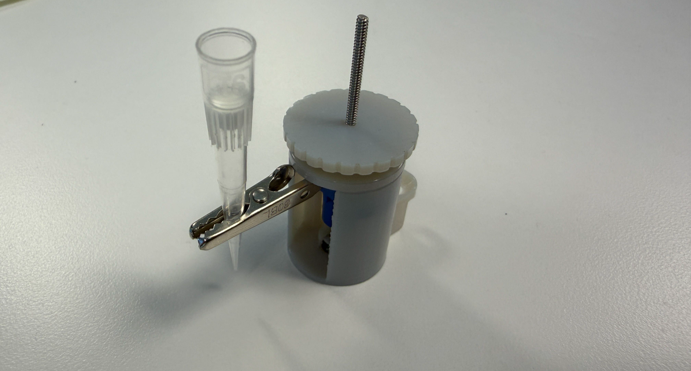

Mechanical Engineer — Design, Analysis & Manufacturing
I design, simulate, and build hardware — then test it against real data. A simulation is only a hypothesis until the bench confirms it.

I'm Devin Wong, a Mechanical Engineering student at UC San Diego (B.S. expected June 2028). I work across the full loop — design, FEA/CFD analysis, manufacturing, and physical validation — and I care most about the moment a part comes off the bench and the numbers agree with the model.
I grew up in the Bay Area, where watching startups and hardware companies ship real products pulled me into engineering. That drive led me to Triton Racing (Formula SAE), where I designed and validated aero structures, and to internships at Roche and Tesla.
Whether it's a carbon-fiber wing spar or a microfluidic sensor module, my habit is the same: predict it with simulation, build it in the shop, and prove it on a test rig.

CompositesDesigned a 31" corrugated carbon-fiber rear-wing spar for Triton Racing carrying a 400 N/m distributed aero load. Modeled the 4-ply twill layup in ANSYS ACP, CNC-milled the foam mold to 0.004" tolerance, and validated laminate stiffness with a 3-point bend test — holding peak deflection to 0.38 mm at a final FOS of 5.5.

CFD · RocheRan parametric trade studies on 4 microfluidic sensor-module geometries for next-gen sequencing hardware at Roche. Built grid-independent CFD (up to 15M cells) and a PD-pump / pressure-sensor rig to validate trends — identifying the design that cut wall-shear non-uniformity by 70% and pressure drop by 72%.

FEADesigned 6061-T6 aluminum swan-neck rear-wing mounts using topology optimization to cut initial weight by 77%. Verified hand calculations against a 2.2M-cell ANSYS study (<0.5% stress variation) and confirmed a static bolt FOS of 47.5 at the chassis interface. Fabricated via water jet.

AeroTwo-element front-wing study (NACA 4412 + S1223) in ANSYS Fluent targeting 200 N at 15 m/s. Established mesh independence via a four-level study and Richardson-extrapolation GCI (2.4%), then drove the design with a 50-point sweep across 5 parameters — reaching Cl 2.74 and L/D 11.0.

ValidationPhysically checked CFD trends with a 9%-scale 3D-printed wing in the UCSD wind tunnel across 3 pitch angles and 5 speeds. Confirmed axial force linear in dynamic pressure (R² > 0.996) and the same V² scaling as CFD, with force ratios agreeing to 3.8%.

Design · RocheDesigned a lead-screw, knob-driven fixture at Roche for fine, repeatable Z-control of probes within a 30 mm envelope — replacing an error-prone manual setup. Modeled and iterated in SolidWorks, then validated with a 3D-printed prototype.
Evaluated how fluidic geometry drives shear-stress distribution and pressure drop in next-generation sequencing hardware. Ran CFD in SolidWorks Flow Simulation across sensor-module architectures, performed steady-state thermal analysis improving interface temperature uniformity by a factor of two, and designed/fabricated fixtures and test stands to validate fluidic prototypes.
Designed the TR26 rear-wing aero assembly to maximize downforce and optimize structural load paths. Performed structural FEA in ANSYS Mechanical (200+ lb distributed loads, FOS ~1.5) and 2D CFD in ANSYS Fluent, generated Fusion 360 CAM toolpaths to machine high-density foam molds on a 3-axis CNC router, and authored 10+ GD&T drawings to ASME Y14.5-2018.
Let's build something
Whether you have a role, a project, or just want to talk hardware — my inbox is always open.
devinwong51@gmail.com